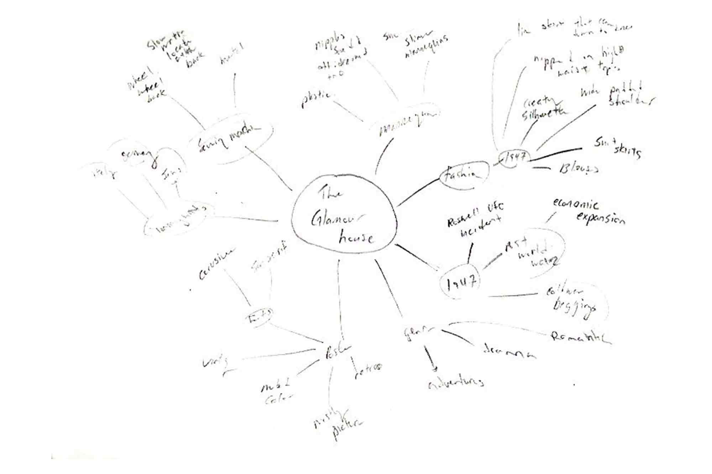
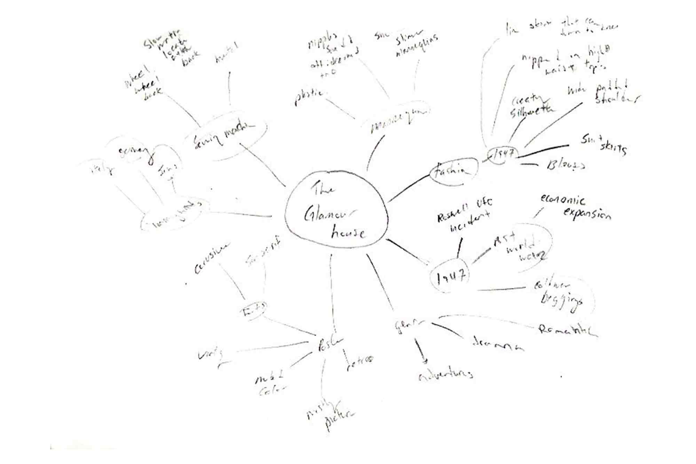

Sung Woon Jeong
I'm a Designer
My passion is in Graphic Design and Illustrations. Making things come to life and telling the story have changed my whole outlook on the design world. I can design delicate and meticulous motion. I work with professionalism and love. If you would like to create a motion with me, please do not hesitate to contact me.
WORKS

PROJECTION MAPPING
For this project I create motion piece. Using after effect to create projection mapping. Projection Mapping uses everyday video projectors, but instead of projecting on a flat screen, light is mapped onto any surface, turning common objects of any 3D shape into interactive displays. More formally, projection mapping is “the display of an image on a non-flat or non-white surface”. But due to time and money, im just showing the prototype of it. Using my illustration to make it more visualizing and the audience more entertaining. I use neon colour to make it look more realistic look.

LOGO DESIGN
East Coast Kicks is a clothing/footwear shop located in Halifax, Canada. It sells clothing and sneakers.Most of the cutomers are young generation between the ages of 16-25, with trendy, street fashion sense, medium to high purchasing power and willingness to spend on their appearance. Goal is to redesign logo that reflect the brand identity and appeal to young audience. Transformation from blue western font in the previous logo to a red hand sign logo reflect a more modern and clean that to appeal young generation. Its simple visual identifier, eye-catching design and it reflect the brand well. Simple shape and modern typography allows the logo to remain highly readable even when it is printed in very small size and it also look modern. Hand sign symbolize east and its been used a lot in the street by young generation. The black colour in the East Coast Kicks logo symbolizes supremacy, classiness, style and brilliance of the brand’s luxury, high-end products. Red colour symbolizes passion, love, courage, energy, joy and youthfulness which reflect well with this logo.
POSTER DESIGN
In the design of my The Glamour house poster, I made it look like retro poster to make it feel that the play sets in 1940’s. By adding muted colors, it would help look more like a retro poster. To make it look like the play takes place at clothing store, I added mannequins since mannequins mostly appear on clothing store.
The main image is two mannequins but the two mannequins shadow creates shadow of two women’s arms are tangled. Let the audience know that there’s something interesting relationship going on at the clothing store.
 


PROJECTION MAPPING
For this project I create motion piece. Using after effect to create projection mapping. Projection Mapping uses everyday video projectors, but instead of projecting on a flat screen, light is mapped onto any surface, turning common objects of any 3D shape into interactive displays. More formally, projection mapping is “the display of an image on a non-flat or non-white surface”. But due to time and money, im just showing the prototype of it. Using my illustration to make it more visualizing and the audience more entertaining. I use neon colour to make it look more realistic look.
LOGO DESIGN
East Coast Kicks is a clothing/footwear shop located in Halifax, Canada. It sells clothing and sneakers.Most of the cutomers are young generation between the ages of 16-25, with trendy, street fashion sense, medium to high purchasing power and willingness to spend on their appearance. Goal is to redesign logo that reflect the brand identity and appeal to young audience. Transformation from blue western font in the previous logo to a red hand sign logo reflect a more modern and clean that to appeal young generation. Its simple visual identifier, eye-catching design and it reflect the brand well. Simple shape and modern typography allows the logo to remain highly readable even when it is printed in very small size and it also look modern. Hand sign symbolize east and its been used a lot in the street by young generation. The black colour in the East Coast Kicks logo symbolizes supremacy, classiness, style and brilliance of the brand’s luxury, high-end products. Red colour symbolizes passion, love, courage, energy, joy and youthfulness which reflect well with this logo.
POSTER DESIGN
In the design of my The Glamour house poster, I made it look like retro poster to make it feel that the play sets in 1940’s. By adding muted colors, it would help look more like a retro poster. To make it look like the play takes place at clothing store, I added mannequins since mannequins mostly appear on clothing store. The main image is two mannequins but the two mannequins shadow creates shadow of two women’s arms are tangled. Let the audience know that there’s something interesting relationship going on at the clothing store.